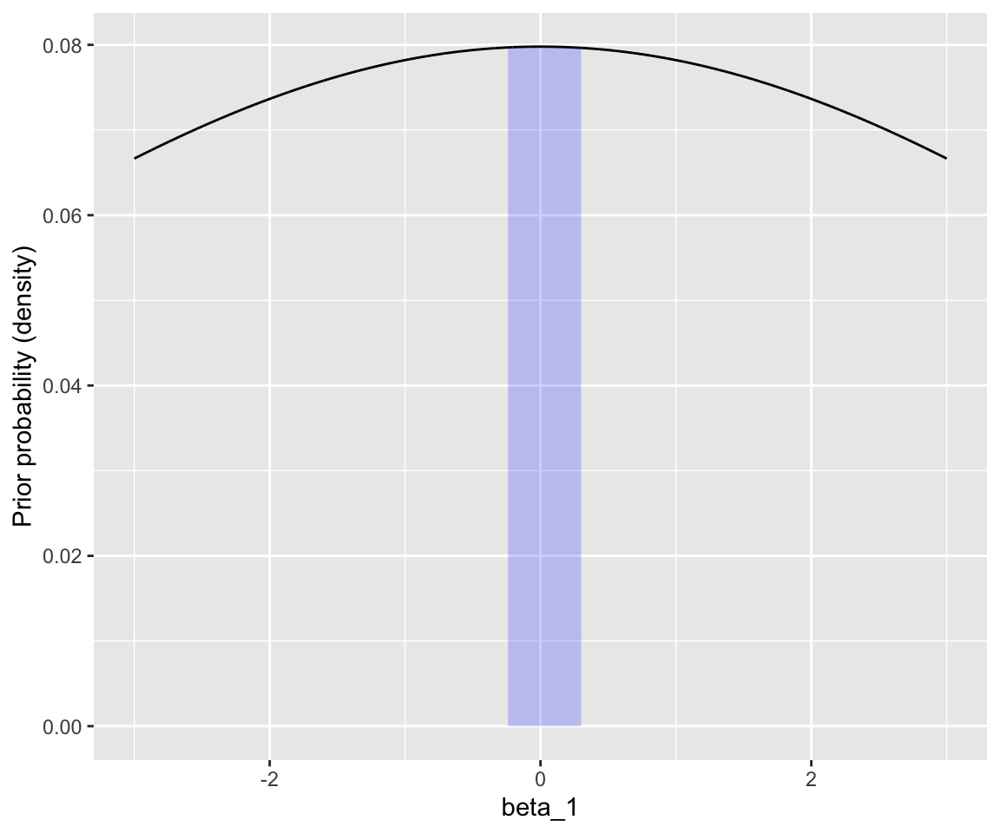
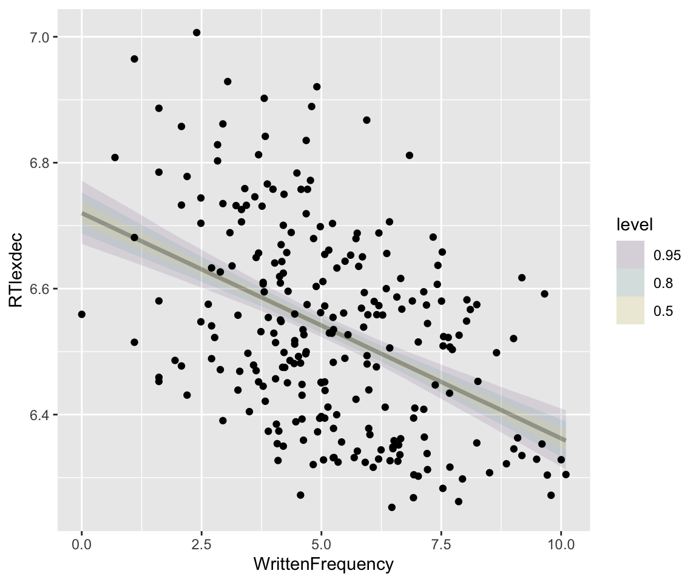

library(tidyverse)
library(brms)
library(broom) # for tidy model summaries
library(modelr) # for the example using data_grid
library(tidybayes)
library(bayestestR)
library(languageR) # for `english' dataset
library(arm)
data_grid <- modelr::data_grid3 Bayesian Regression Models 1
These lecture notes cover topics from:
- McElreath (2020) Chap. 4.3.2, 4.4-4.5.1, 5.1-5.2
- We are skipping the DAGs and causal inference parts
- Kurz (2023) Sec. 4.3.2, 4.4-4.5.1, 5.1-5.2, 5.4.2
- Makowski, Ben-Shachar, and Lüdecke (2019) and the associated bayestestR package.
Topics:
- Multiple regression
- Interpreting effects
- Effect plots
- Effect existence/“significance” indices
- Priors
- Types: regularizing, flat, etc.
- Prior predictive checks
3.1 Preliminaries
Load libraries we will need:
Practical note
If you have loaded rethinking, you need to detach it before using brms. See Kurz (2023) Sec. 4.3.1.
I use the file argument when fitting brms models to make compiling this document easier (so the models don’t refit every time I compile). You may or may not want to do this for your own models. See file and file_refit arguments in ?brm.
3.1.1 Datasets
Load the diatones and dyads datasets, described in Section 1.1 and Section 2.1.
diatones <- read.csv("https://osf.io/tqjm8/download", stringsAsFactors = TRUE)
dyads <- read.csv("https://osf.io/6j8kc/download")Perform some data cleaning and recoding for diatones, described in Secs. 6.1.1 and. 6.7.2.1 of Regression Modeling for Linguistic Data (Sonderegger 2023).
# make numeric versions of all categorical predictors,
# while saving original versions
diatones <- diatones %>% mutate(
syll1_coda_orig = syll1_coda,
syll2_coda_orig = syll2_coda,
syll2_td_orig = syll2_td,
## turns no/yes -> 0/1
syll1_coda = ifelse(syll1_coda == "no", 0, 1),
## turns '0'/'C'/'CC'/'CCC' -> 0/1/2/3
syll2_coda = str_count(syll2_coda_orig, "C"),
syll2_td = ifelse(syll2_td == "no", 0, 1)
)
## standardize all predictors using arm::rescale
diatones <- diatones %>% mutate(
syll1_coda = rescale(syll1_coda_orig),
syll2_td = rescale(syll2_td_orig),
syll2_coda = rescale(syll2_coda),
frequency = rescale(frequency)
)Define the english_250 dataframe, like last week:
## set seed, so you'll get the same "random" sample
set.seed(100)
english_250 <- english[sample(1:nrow(english), 250), ]We will also use a much smaller subset (\(n=25\)) for some examples:
set.seed(10)
english_25 <- english[sample(1:nrow(english), 25), ]The same dataset (english) is used extensively in Chapters 4 and 5 of Sonderegger (2023) in examples of frequentist linear regression models, which parallel these notes.
3.2 Regression models: introduction
Let’s (finally) start fitting models including predictors. We will again use “uninformative” priors without discussion, and return to priors below (Section 3.5).
3.2.1 Simple linear regression
First example: the effect of WrittenFrequency on RTlexdec. The empirical effect, with least-squares lines of best fit:
Code
english_250 %>% ggplot(aes(x = WrittenFrequency, y = RTlexdec)) +
geom_point() +
geom_smooth(method = "lm")The frequentist model in this case can be written:
\[\begin{align} y_i &\sim N(\mu, \sigma) \\ \mu & = \alpha + \beta_1 x_{1i}, \end{align}\]where \(x_{1i}\) is the value of WrittenFrequency for observation \(i\) (\(i=1, \ldots, n\)). Fit this model and report its results:1
english_m41_freq <- lm(RTlexdec ~ 1 + WrittenFrequency, data = english_250)
## kable() formats the table for markdown output.
##
## use
## summary(english_m41_freq)
## in your R console to just see the uusal model table
kable(tidy(english_m41_freq, conf.int = TRUE), format = "markdown", digits = 2)| term | estimate | std.error | statistic | p.value | conf.low | conf.high |
|---|---|---|---|---|---|---|
| (Intercept) | 6.72 | 0.03 | 259.42 | 0 | 6.67 | 6.77 |
| WrittenFrequency | -0.04 | 0.00 | -7.65 | 0 | -0.04 | -0.03 |
We fit a Bayesian intercept-only model for this case in Section 2.5.3, using priors for \(\mu\) and \(\sigma\).
3.2.1.1 Prior for \(\sigma\)
In contrast to that model, where a half-Cauchy prior was used, we will now use an exponential prior for \(\sigma\). This distribution (see the link) has a single “rate” parameter \(\lambda\), and expected value \(1/\lambda\), so smaller \(\lambda\) values make the distribution wider.
Both half-Cauchy and exponential have properties which make them good priors for variance parameters like \(\sigma\), discussed in Section 2.5.3 :
- Restrict \(\sigma\) to be positive
- Long tail \(\Rightarrow\) high \(\sigma\) values possible, but a priori unlikely
- Sampling posterior (and posterior predictive distribution) with MCMC algorithms works well
It turns out that the exponential distribution is better suited for a fourth desideratum: sampling from the prior predictive distribution, using an MCMC algorithms.2
This is the prior we will be using for \(\sigma\) in today’s linear regression models, \(\text{Exponential}(1)\):
Code
data.frame(sig = seq(0, 5, by = 0.1)) %>%
mutate(prob = dexp(sig, rate = 1)) %>%
ggplot(aes(x = sig, y = prob)) +
geom_line() +
ylab("Prior probability (PDF)") +
xlab(expression(sigma)) +
theme(axis.title.x = element_text(size = 15))Recall that reasonable values of RTlexdec are 6–7, thus \(\sigma\) of ~1 would be large, so this is a relatively uninformative prior.
3.2.1.2 Prior for \(\beta_1\)
The additional piece we need to write down the probability model here is a prior on \(\beta_1\). We will use \(\beta \sim N(0, 5)\), which is “uninformative” by this logic:
- Center at 0: uninformative about effect direction
- For
RTlexdeca change of 1 is huge; forWrittenFrequencya change of 10 is huge (see range of the data), so a slope of 1/10 = 0.1 is large. (So +- 3\(\sigma\), when \(\sigma\)=5, is really, really large.)
This graph shows that plausible effects (\(|\beta_1| < 0.3\)) have roughly flat prior probability:
Code
dnorm_limit <- function(x) {
y <- dnorm(x, sd = 5)
y[x > 0.3 | x < (-0.3)] <- NA
return(y)
}
df <- data.frame(beta1 = seq(-3, 3, by = 0.001), p = dnorm(x = seq(-3, 3, by = 0.001), sd = 5))
## log-odds of -5 to 5
df %>% ggplot(aes(x = beta1, y = p)) +
geom_line() +
xlab("beta_1") +
ylab("Prior probability (density)") +
xlim(-3, 3) +
stat_function(fun = dnorm_limit, geom = "area", fill = "blue", alpha = 0.2)
(I have used a very wide prior here so it is also flat for the effects of AgeSubject and polynomials of RTlexdec that we’ll consider below.)
The probability model for \(y\) (RTlexdec) is then:
Note the distinction here between ~ and =.
Fit this model in brms:
## this uses defaults for MCMC: chains = 4, iter = 2000, warmup = 1000
english_m41 <-
brm(
data = english_250,
RTlexdec ~ 1 + WrittenFrequency,
family = gaussian,
prior = c(
prior(normal(0, 100), class = Intercept),
prior(normal(0, 5), class = b),
prior(exponential(1), class = sigma)
),
file = "models/english_m41.brm"
)(If you fit this model you’ll see a lot of output showing the fitting process; I’ll suppress brms output throughout these notes.)
Broader context
The Intercept and WrittenFrequency estimates, based on the posterior summaries, are very similar to the frequentist model above. Always check the trace plots for hairy caterpillars and reasonable-looking posteriors (Section 2.5.3.2):
plot(english_m41)To get a sense of what this model predicts, consider the posterior for \(\alpha\) and \(\beta_1\):
Code
english_m41 %>%
spread_draws(b_Intercept, b_WrittenFrequency) %>%
ggplot(aes(x = b_Intercept, y = b_WrittenFrequency)) +
geom_hex() +
xlab("alpha") +
ylab("beta_1")This gives a posterior distribution over relationships between \(y\) and \(x\), which we could imagine as a generative process (generate lines \(y = \alpha + \beta_1 x\)) as follows:
- Choose values of \(\alpha\) and \(\beta_1\).
- Predict \(y\) for \(x\) = 6, 6.01, … , 7.
- Plot \(x\) vs \(y\).
- Repeat many times (100, say), putting all lines on the same plot.
Kurz (2023) Sec. 4.4.1 shows how to do this by hand. We instead use tidybayes functionality (see vignette for details), as follows.
First, get draws of the expected value of \(y\) as a function of \(x\). We use data_grid() from the modelR package to set up the dataframe of values of \(x\) to predict at, then use the tidybayes add_epred_draws() function:
y_draws <- english_250 %>%
## get grid of values on x axis
data_grid(WrittenFrequency = seq_range(WrittenFrequency, n = 101)) %>%
add_epred_draws(english_m41, ndraws = 100)Visualize:
Code
y_draws %>%
ggplot(aes(x = WrittenFrequency, y = RTlexdec)) +
geom_line(aes(y = .epred, group = .draw), alpha = .1) +
geom_point(data = english_250) +
theme(legend.position = "none")This is (informally) called a spaghetti plot. It can be useful for understanding to animate the plot so you see one line at a time (a hypothetical outcome plot).
3.2.2 Predicted effects 1
It is more common to visualize the model’s predicted effects (here, of \(x\)), with a “confidence interval” (a.k.a. “credibility interval”)—by showing some overall predicted effect with uncertainty (e.g. taking the median and 95% CI across the spaghetti, of \(y\) at each value of \(x\)). Using tidybayes:
Code
## get grid of values on x axis
english_250 %>%
data_grid(WrittenFrequency = seq_range(WrittenFrequency, n = 101)) %>%
add_epred_draws(english_m41) %>%
ggplot(aes(x = WrittenFrequency, y = RTlexdec)) +
stat_lineribbon(aes(y = .epred), alpha = 0.1) +
geom_point(data = english_250)
Even simpler, just showing the 95% CI:
Code
## get grid of values on x axis
english_250 %>%
data_grid(WrittenFrequency = seq_range(WrittenFrequency, n = 101)) %>%
add_epred_draws(english_m41) %>%
ggplot(aes(x = WrittenFrequency, y = RTlexdec)) +
stat_lineribbon(aes(y = .epred), .width = c(0.95), alpha = 0.5) +
geom_point(data = english_250) +
theme(legend.position = "none") +
ggtitle("Confidence intervals (or 'credibility')")We could alternatively plot posterior predictions—using uses the posterior for actual observations, not means. This would mean:
- Choose values of \(\alpha\), \(\beta_1\), and \(\sigma\).
- Predict values of \(y\) for \(x\) = 6, … , 7 using \(\alpha\) and \(\beta_1\), adding noise using \(\sigma\).
- Plot \(x\) vs \(y\).
- Repeat 1000 times, then plot the median + 95% PI of \(y\) for each value of \(x\).
We can do this using the tidybayes add_predicted_draws() function:
Code
## get grid of values on x axis
english_250 %>%
data_grid(WrittenFrequency = seq_range(WrittenFrequency, n = 101)) %>%
add_predicted_draws(english_m41) %>%
ggplot(aes(x = WrittenFrequency, y = RTlexdec)) +
stat_lineribbon(aes(y = .prediction), .width = c(.95), alpha = 1 / 4) +
geom_point(data = english_250) +
ggtitle("Prediction intervals") +
theme(legend.position = "none")Note how the 95% prediction interval (PI) contains most observations, while the 95% CI does not, as expected.
More generally, for any values of the predictors, we can extract a posterior distribution over:
- the fitted values (calculated just using predictors)
- the model predictions (the actual \(y_i\) values, taking noise into account)
The terminology is not consistent across packages/authors, but the existence of these two type of “predictions” is. In brms, they are extracted using functions fitted() and predict(), respectively. In tidybayes and rstan, functions of these two types contain the strings epred and predict (as in the tidybayes functions used to make plots above).
As an example, using brms functions: the mean + 95% CI for the fitted values for the first 5 observations in english_250 are:
fitted(english_m41) %>% head(n = 5)
## Estimate Est.Error Q2.5 Q97.5
## [1,] 6.584161 0.011296955 6.562595 6.606617
## [2,] 6.462223 0.012807470 6.437004 6.487829
## [3,] 6.358862 0.023808050 6.312888 6.406904
## [4,] 6.541302 0.009289047 6.523069 6.559617
## [5,] 6.591168 0.011830462 6.568698 6.614645The same for model predictions:
predict(english_m41) %>% head(n = 5)
## Estimate Est.Error Q2.5 Q97.5
## [1,] 6.586306 0.1442737 6.301712 6.872248
## [2,] 6.459703 0.1451474 6.183633 6.742939
## [3,] 6.358503 0.1453746 6.079538 6.643806
## [4,] 6.540256 0.1441920 6.254455 6.820970
## [5,] 6.590544 0.1464116 6.301902 6.870175The distinction here is the same as between “confidence intervals” and “prediction intervals” for frequentist models (see Sonderegger 2023, sec. 8.8.2).
Broader context
All functionality above makes use of a key property of Bayesian models: they predict a distribution, whether using “model predictions” or “fitted values”. This is why the fitted() and predict() results show extra rows, compared to the same functions applied to a frequentist model:
fitted(english_m41_freq) %>% head()
## 3786 503 3430 3696 4090 3052
## 6.584325 6.462561 6.359349 6.541527 6.591322 6.403717
predict(english_m41_freq) %>% head()
## 3786 503 3430 3696 4090 3052
## 6.584325 6.462561 6.359349 6.541527 6.591322 6.403717It’s still possible to get uncertainties in fitted values and predictions for frequentist models, of course (see RMLD Sec. XX), and in this case would be trivial. Adding uncertainties to frequentist model predictions just takes a bit of extra work, where the amount of work increases as model complexity increases. The point here is that Bayesian models give us uncertainty in fitted and predicted values “for free”, as part of the procedure (sampling from the posterior) by which these are computed from the model.
Exercise 3.1
- Fit the same model, now to
english_25. - Make a couple of the plots above (spaghetti, effects with 95% CI or PI).
- How do these look different from the plots for model
english_m41, and why?
3.2.3 Standardizing predictors
Note how the hex plot above (Section 3.2.1.2) shows that the posteriors for \(\alpha\) and \(\beta_1\) are not independent. This follows naturally from the form of the model (see exercises), and in particular the fact that predictors are not centered, which makes the estimates of \(\alpha\) and \(\beta_1\) correlated.
In general we will standardize predictors—minimally by centering, often by scaling by 1–2\(\sigma\)—for this reason, as well as all reasons familiar from frequentist regression models (see Sonderegger 2023, sec. 5.5.4). The intercept becomes easier to interpret, main-effect coefficients have easier interpretations in the presence of interactions between predictors, models fit faster, etc.3
Let’s refit the current model after centering \(x_1\):
## scale with scale = FALSE just centers
english_250 <- mutate(
english_250,
WrittenFrequency_c = scale(WrittenFrequency, scale = FALSE)
)english_m42 <-
brm(
data = english_250,
RTlexdec ~ 1 + WrittenFrequency_c,
family = gaussian,
prior = c(
prior(normal(0, 100), class = Intercept),
prior(normal(0, 5), class = b),
prior(exponential(1), class = sigma)
),
file = "models/english_m42.brm"
)Make a spaghetti plot for this model:
Code
## get grid of values on x axis
english_250 %>%
data_grid(WrittenFrequency_c = seq_range(WrittenFrequency_c, n = 101)) %>%
add_epred_draws(english_m42, ndraws = 100) %>%
ggplot(aes(x = WrittenFrequency_c, y = RTlexdec)) +
geom_line(aes(y = .epred, group = .draw), alpha = .1) +
geom_point(data = english_250) +
xlab("WrittenFrequency (centered)") +
theme(legend.position = "none")
Practical note
Assuming you have standardized predictors (including using a “centered” contrast coding scheme for factors), brms will usually choose sensible “weakly informative” priors by default. This is an important additional reason to standardize your data before fitting models. It is currently common practice in work using brms/Stan to just use default priors, even though this is not recommended—it’s always good to actually think through prior choices.
This is why we’re working through priors in some detail in this and surrounding chapters, but in a pinch, we sometimes just fit a model without specifying priors, confident that brms defaults will work.
Exercise 3.2
Why does the hex plot of the \(\alpha\), \(\beta_1\) posterior for
english_m41show a negative relationship between \(\alpha\) and \(\beta_1\)? (Hint: 4)Make the same plot for model
english_m42and verify that the posteriors for \(\alpha\) and \(\beta_1\) now look independent. Why does this make sense once \(x_1\) has been centered? (Hint: 5)
3.3 Multiple linear regression
Fitting a regression with multiple predictors is similar. Let’s consider AgeSubject and WrittenFrequency as predictors of RTlexdec for the english_250 data. The empirical pattern is:
Code
english_250 %>% ggplot(aes(x = WrittenFrequency, y = RTlexdec)) +
geom_point() +
geom_smooth(method = "lm", aes(color = AgeSubject))By the same logic as above:
- Center
AgeSubjectby making aSubjectOldpredictor with values -0.5 and 0.5 - \(\beta_2\) = effect of
SubjectYoung= \(x_2\) - Prior: \(\beta_2 \sim N(0,5)\)
english_250 <- english_250 %>% mutate(
SubjectYoung = as.numeric(AgeSubject)-1.5
)Fit the model, with
english_m43 <-
brm(
data = english_250,
RTlexdec ~ 1 + WrittenFrequency_c + SubjectYoung,
family = gaussian,
prior = c(
prior(normal(0, 100), class = Intercept),
prior(normal(0, 5), class = b),
prior(exponential(1), class = sigma)
),
file = "models/english_m43.brm"
)Fitted model:
english_m43
## Family: gaussian
## Links: mu = identity; sigma = identity
## Formula: RTlexdec ~ 1 + WrittenFrequency_c + SubjectYoung
## Data: english_250 (Number of observations: 250)
## Draws: 4 chains, each with iter = 2000; warmup = 1000; thin = 1;
## total post-warmup draws = 4000
##
## Regression Coefficients:
## Estimate Est.Error l-95% CI u-95% CI Rhat Bulk_ESS Tail_ESS
## Intercept 6.55 0.01 6.54 6.56 1.00 4356 3342
## WrittenFrequency_c -0.03 0.00 -0.04 -0.03 1.00 4936 3226
## SubjectYoung -0.24 0.01 -0.26 -0.21 1.00 3215 2425
##
## Further Distributional Parameters:
## Estimate Est.Error l-95% CI u-95% CI Rhat Bulk_ESS Tail_ESS
## sigma 0.08 0.00 0.08 0.09 1.00 3411 2825
##
## Draws were sampled using sampling(NUTS). For each parameter, Bulk_ESS
## and Tail_ESS are effective sample size measures, and Rhat is the potential
## scale reduction factor on split chains (at convergence, Rhat = 1).Note that class = b makes the \(N(0,5)\) prior apply to all \(\beta\) coefficients (\(\beta_1\), \(\beta_2\), …)
Spaghetti plot of the predicted relationship:
Code
english_250 %>%
group_by(SubjectYoung) %>%
data_grid(WrittenFrequency_c = seq_range(WrittenFrequency_c, n = 101), SubjectYoung = c(-0.5, 0.5)) %>%
## changed to 25 lines instead of 100 to
## make the graph more legible
add_epred_draws(english_m43, ndraws = 25) %>%
ggplot(aes(x = WrittenFrequency_c, y = RTlexdec)) +
geom_line(aes(y = .epred, group = paste(SubjectYoung, .draw), color = SubjectYoung, alpha = .1)) +
geom_point(data = english_250) +
theme(legend.position = "none")Exercise 3.3 Make an analagous plot showing prediction intervals (like the relevant plot for model english_m41 above).
3.3.1 Marginal effects
For multiple regression models it is often/usually of interest to plot the effect of varying 1+ predictors while holding others constant (e.g. at 0, or the mean). These are usually called marginal effects, or conditional effects (or partial effects, though this is less precise); see definition/discussion in Sonderegger (2023) (Sec 5.5.4, 6.7.3, later sections). McElreath calls these “counterfactual plots”, which is more descriptive and general, but nonstandard.6
As always, you can use pre-written functions for marginal effects or make predictions yourself. One pre-written option is the conditional_effects() function from brms. We use this to make a partial-effect plot for WrittenFrequency_c (holds SubjectYoung = 0, means averaging over old and young subjects):
Partial effect plot for WrittenFrequency_c using conditional_effects (holds SubjectYoung = 0, means averaging over old and young subjects):
conditional_effects(english_m43, effects = "WrittenFrequency_c")This function can be made to return a dataframe, which you can manipulate directly to make better plots:
conditional_effects(english_m43, effects = "WrittenFrequency_c")$WrittenFrequency_c -> freqPartial_df
head(freqPartial_df) ## lower/upper/estimate = 95% CredI + mean of posterior
## WrittenFrequency_c RTlexdec SubjectYoung cond__ effect1__ estimate__
## 1 -5.187430 6.534968 0.048 1 -5.187430 6.711423
## 2 -5.085406 6.534968 0.048 1 -5.085406 6.707919
## 3 -4.983382 6.534968 0.048 1 -4.983382 6.704429
## 4 -4.881357 6.534968 0.048 1 -4.881357 6.700953
## 5 -4.779333 6.534968 0.048 1 -4.779333 6.697442
## 6 -4.677308 6.534968 0.048 1 -4.677308 6.693975
## se__ lower__ upper__
## 1 0.01518186 6.682297 6.740544
## 2 0.01490169 6.679392 6.736576
## 3 0.01463982 6.676453 6.732593
## 4 0.01436069 6.673575 6.728691
## 5 0.01408509 6.670724 6.724725
## 6 0.01379316 6.667786 6.720763
freqPartial_df %>% ggplot(aes(x = WrittenFrequency_c, y = estimate__)) +
geom_lineribbon(aes(ymin = lower__, ymax = upper__)) +
geom_point(aes(x = WrittenFrequency_c, y = RTlexdec), data = english_250, size = 0.5) +
ylab("RTlexdec") +
ggtitle("Partial effect of written frequency") +
ylab("RTlexdec: Estimate + 95% CI")Example of making our own partial effect plot for AgeSubject, with prediction intervals:
## Make a dataframe of values to predict at: vary SubjectYoung hold WrittenFrequency_c at 0
agePartial_df <- expand_grid(SubjectYoung = c(-0.5, 0.5), WrittenFrequency_c = 0)
agePartial_df
## # A tibble: 2 × 2
## SubjectYoung WrittenFrequency_c
## <dbl> <dbl>
## 1 -0.5 0
## 2 0.5 0
## for 95% CIs, we'd use 'fitted' instead of 'predict' here.
predict(english_m43, newdata = agePartial_df) -> fittedVals
fittedVals
## Estimate Est.Error Q2.5 Q97.5
## [1,] 6.667137 0.08236155 6.501877 6.826921
## [2,] 6.429246 0.08451450 6.259287 6.593990
agePartial_df <- bind_cols(agePartial_df, data.frame(fittedVals))
## add back AgeSubject for plotting
agePartial_df <- agePartial_df %>% mutate(AgeSubject = factor(SubjectYoung, labels = levels(english_250$AgeSubject)))
agePartial_df %>% ggplot(aes(x = AgeSubject, y = Estimate)) +
geom_pointrange(aes(ymin = Q2.5, ymax = Q97.5)) +
geom_jitter(aes(x = AgeSubject, y = RTlexdec), data = english_250, size = 0.5, width = 0.1, alpha = 0.25) +
ggtitle("Partial effect of AgeSubject") +
ylab("RTlexdec: estimate + 95% PI")
Practical note
Other pre-written options for making model predictions include the powerful emmeans Lenth (2024) and marginaleffects Arel-Bundock, Greifer, and Heiss (Forthcoming) packages, which are compatible with brms models. I highly recommend making regular use of one of these packages, which work across a range of model types. See Sonderegger (2023), Chap. 7 and throughout, for examples of using emmeans for linguistic data.
It’s important to bear in mind the trade-off between using pre-written functions and “rolling your own”. A pre-written option is easier, but the code you use may break in the future and you know less about the details of how predictions are made, which can be important. Making predictions yourself is harder, but the code you write will be more stable, and you’ll know all the details. In practice, I recommend finding a middle way that makes sense for you.
Exercise 3.4 Make a plot showing the posterior of the predicted RTlexdec difference between AgeSubject=old and young, holding WrittenFrequency_c at 0. This should look like a “half-eye” plot (Section 2.3.5) (Hint: 7)
3.3.2 Nonlinear effects
Plotting with a smoother instead of a line of best fit, it looks like the WrittenFrequency_c relationship could be nonlinear:

The easiest way to fit a nonlinear function is using polynomials. We will use orthogonal polynomials, implemented using the poly() function; see Sonderegger (2023) Sec. 7.5.3 for a refresher.8
For a polynomial of order 3 (to model the two inflection points visible in AgeSubject):
english_m44 <-
brm(
data = english_250,
RTlexdec ~ 1 + poly(WrittenFrequency_c, 3) + SubjectYoung,
family = gaussian,
prior = c(
prior(normal(0, 100), class = Intercept),
prior(normal(0, 5), class = b),
prior(exponential(1), class = sigma)
),
file = "models/english_m44.brm"
)english_m44
## Family: gaussian
## Links: mu = identity; sigma = identity
## Formula: RTlexdec ~ 1 + poly(WrittenFrequency_c, 3) + SubjectYoung
## Data: english_250 (Number of observations: 250)
## Draws: 4 chains, each with iter = 2000; warmup = 1000; thin = 1;
## total post-warmup draws = 4000
##
## Regression Coefficients:
## Estimate Est.Error l-95% CI u-95% CI Rhat Bulk_ESS
## Intercept 6.55 0.01 6.54 6.56 1.00 5341
## polyWrittenFrequency_c31 -1.05 0.08 -1.21 -0.89 1.00 4788
## polyWrittenFrequency_c32 0.15 0.08 -0.02 0.31 1.00 5190
## polyWrittenFrequency_c33 0.14 0.08 -0.02 0.29 1.00 5125
## SubjectYoung -0.24 0.01 -0.26 -0.22 1.00 4948
## Tail_ESS
## Intercept 3075
## polyWrittenFrequency_c31 2852
## polyWrittenFrequency_c32 2857
## polyWrittenFrequency_c33 3114
## SubjectYoung 3123
##
## Further Distributional Parameters:
## Estimate Est.Error l-95% CI u-95% CI Rhat Bulk_ESS Tail_ESS
## sigma 0.08 0.00 0.08 0.09 1.00 4908 3251
##
## Draws were sampled using sampling(NUTS). For each parameter, Bulk_ESS
## and Tail_ESS are effective sample size measures, and Rhat is the potential
## scale reduction factor on split chains (at convergence, Rhat = 1).The coefficients here are not easily interpretable.9 We typically interpret nonlinear effects by examining model predictions. Make a spaghetti plot of the fitted values (not a partial effect plot of WrittenFrequency_c):
Code
english_250 %>%
data_grid(WrittenFrequency_c = seq_range(WrittenFrequency_c, n = 101), SubjectYoung = c(-0.5, 0.5)) %>%
add_epred_draws(english_m44, ndraws = 50) %>%
ggplot(aes(x = WrittenFrequency_c, y = RTlexdec)) +
## the factor() stuff is just to get SubjectYoung = -0.5, 0.5 to appear as blue/red in graph
geom_line(aes(y = .epred, group = paste(factor(SubjectYoung), .draw), color = factor(SubjectYoung)), alpha = .1) +
geom_point(data = english_250) +
theme(legend.position = "none")Note how the effect is much more uncertain near the upper and lower bounds of the predictor (WrittenFrequency_c). This is familiar from a polynomial effect in a frequentist model (higher CIs near the boundaries), but a Bayesian model makes it clearer what is going on: many polynomials, which differ only near the endpoints, are consistent with this data. Avoiding such fits is a major motivation for using splines, which we’ll turn to later in the course with GAMs.
Exercise 3.5 Make a partial effect plot for WrittenFrequency_c for model english_m44, with 95% CIs.
3.3.3 Multicollinearity: example
Correlations between predictors (more precisely, of the effects of predictors after controlling for others), or multicollinearity, is an important issue to take into account for all regression models. For Bayesian regression models, an example using highly-correlated predictors will help us understand what the coefficients of a fitted Bayesian model mean.
Review Sonderegger (2023) Sec. 5.6, if needed, on the definition of multicollinearity, and the example of predicting RTlexdec using WrittenFrequency and Familiarity, which are highly correlated in english, but both negatively correlate with RTlexdec. In the english_25 subset in particular:
cor(dplyr::select(english_25, RTlexdec, WrittenFrequency, Familiarity))
## RTlexdec WrittenFrequency Familiarity
## RTlexdec 1.0000000 -0.4016724 -0.5791578
## WrittenFrequency -0.4016724 1.0000000 0.8313906
## Familiarity -0.5791578 0.8313906 1.0000000
pairscor.fnc(dplyr::select(english_25, RTlexdec, WrittenFrequency, Familiarity))We will fit a linear regression for english_25:
- \(y\):
RTlexdec - \(x_1\), \(x_2\), \(x_3\) :
WrittenFrequency_c,SubjectYoung,Familiarity_c - Same priors as for models above.
# center predictors
english_25 <- mutate(english_25,
WrittenFrequency_c = scale(WrittenFrequency, scale = FALSE),
Familiarity_c = scale(Familiarity, scale = FALSE),
SubjectYoung = as.numeric(AgeSubject) - 1.5
)english_collin_m1 <-
brm(
data = english_25,
RTlexdec ~ 1 + WrittenFrequency_c + Familiarity_c + SubjectYoung,
family = gaussian,
prior = c(
prior(normal(0, 100), class = Intercept),
prior(normal(0, 5), class = b),
prior(exponential(1), class = sigma)
),
file = "models/english_collin_m1.brm"
)english_collin_m1
## Family: gaussian
## Links: mu = identity; sigma = identity
## Formula: RTlexdec ~ 1 + WrittenFrequency_c + Familiarity_c + SubjectYoung
## Data: english_25 (Number of observations: 25)
## Draws: 4 chains, each with iter = 2000; warmup = 1000; thin = 1;
## total post-warmup draws = 4000
##
## Regression Coefficients:
## Estimate Est.Error l-95% CI u-95% CI Rhat Bulk_ESS Tail_ESS
## Intercept 6.54 0.02 6.51 6.57 1.00 3039 2410
## WrittenFrequency_c -0.02 0.02 -0.06 0.02 1.00 2280 2204
## Familiarity_c -0.05 0.03 -0.10 0.01 1.00 2306 2337
## SubjectYoung -0.21 0.04 -0.28 -0.14 1.00 2548 2396
##
## Further Distributional Parameters:
## Estimate Est.Error l-95% CI u-95% CI Rhat Bulk_ESS Tail_ESS
## sigma 0.08 0.01 0.06 0.12 1.00 2720 2686
##
## Draws were sampled using sampling(NUTS). For each parameter, Bulk_ESS
## and Tail_ESS are effective sample size measures, and Rhat is the potential
## scale reduction factor on split chains (at convergence, Rhat = 1).Visualize joint posterior for \(\beta_1\) and \(\beta_3\):
Code
# heatmap of posterior for two coefficients, with lines at beta_1, beta_3 = 0
english_collin_m1 %>%
spread_draws(b_WrittenFrequency_c, b_Familiarity_c) %>%
ggplot(aes(x = b_WrittenFrequency_c, y = b_Familiarity_c)) +
geom_hex() +
xlab("beta_1: WrittenFrequency_c") +
ylab("beta_3: Familiarity_c") +
geom_vline(aes(xintercept = 0), lty = 2) +
geom_hline(aes(yintercept = 0), lty = 2)Visualize marginal posterior for these two coefficients:
Code
# dotted line: 0
mcmc_plot(english_collin_m1, type = "hist", variable = c("b_Familiarity_c", "b_WrittenFrequency_c")) + geom_vline(aes(xintercept = 0), lty = 2)
## `stat_bin()` using `bins = 30`. Pick better value with `binwidth`.The fact that these overlap 0 corresponds to the overlapping 95% CredI for WrittenFrequency_c and Familiarity_c in the model table above.
Optional exercises for this example are in Section 3.8.
3.4 Multiple regression for GLMs
GLMs work analogously to linear regression.
3.4.1 Example: logistic regression
Refit the model of the diatones data from Sonderegger (2023) Sec. 6.7.2.1 (see empirical plots in Sec. 6.1.1 of the book):
diatones_m41 <- brm(
data = diatones,
stress_shifted | trials(1) ~ syll2_coda + syll2_td + frequency + syll1_coda,
family = binomial,
prior = c(
prior(normal(0, 5), class = Intercept),
prior(normal(0, 3), class = b)
),
file = "models/diatones_m41.brm"
)diatones_m41
## Family: binomial
## Links: mu = logit
## Formula: stress_shifted | trials(1) ~ syll2_coda + syll2_td + frequency + syll1_coda
## Data: diatones (Number of observations: 130)
## Draws: 4 chains, each with iter = 2000; warmup = 1000; thin = 1;
## total post-warmup draws = 4000
##
## Regression Coefficients:
## Estimate Est.Error l-95% CI u-95% CI Rhat Bulk_ESS Tail_ESS
## Intercept -1.91 0.29 -2.50 -1.37 1.00 3623 2787
## syll2_coda -1.30 0.64 -2.58 -0.08 1.00 3259 2980
## syll2_td 0.81 0.59 -0.34 1.97 1.00 4166 3368
## frequency -0.61 0.49 -1.56 0.35 1.00 4277 3102
## syll1_coda 1.23 0.55 0.15 2.31 1.00 3876 2840
##
## Draws were sampled using sampling(NUTS). For each parameter, Bulk_ESS
## and Tail_ESS are effective sample size measures, and Rhat is the potential
## scale reduction factor on split chains (at convergence, Rhat = 1).The coefficients look very similar to the analagous frequentist model:
mlogreg_mod_1 <- glm(
stress_shifted ~ syll2_coda + syll2_td +
frequency + syll1_coda,
data = diatones, family = "binomial"
)
kable(tidy(mlogreg_mod_1, conf.int = TRUE), format = "markdown", digits = 2)| term | estimate | std.error | statistic | p.value | conf.low | conf.high |
|---|---|---|---|---|---|---|
| (Intercept) | -1.83 | 0.28 | -6.63 | 0.00 | -2.43 | -1.33 |
| syll2_coda | -1.31 | 0.64 | -2.06 | 0.04 | -2.62 | -0.11 |
| syll2_td | 0.84 | 0.58 | 1.46 | 0.15 | -0.29 | 2.00 |
| frequency | -0.61 | 0.49 | -1.24 | 0.22 | -1.58 | 0.37 |
| syll1_coda | 1.24 | 0.55 | 2.25 | 0.02 | 0.15 | 2.34 |
Exercise 3.6 Fit the Poisson regression model gestures ~ context + language from Section 2.6.3, but now using brm(). You will need to first determine appropriate “uninformative” priors for \(\beta_1\) and \(\beta_2\), by thinking about what a very large change in log(gestures) would be for this data.
3.5 Priors
Choosing priors is one of the trickier parts of fitting Bayesian models, at first, and completely new relative to frequentist models.
Different kinds of priors, and motivations for using them, are important to know about. Unfortunately there is no standard terminology; we’ll use common terms, but you may come upon new ones.
Priors differ in their informativity: how much information about likely values of parameter \(\beta\) (“prior knowledge”) they bring to the model. These roughly fall on a continuum from less to more informative:
- Uninformative
- Flat/uninformative : e.g. \(\text{Uniform}(p)\). Often these are improper (not actually probability distributions).
- vague but proper: as flat as possible while still being a probability distribution, like \(\beta \sim N(0, 100000)\). (example below: “weak” prior)
- Weakly informative:
- encode some information about possible datasets, weakly (as in the example in the next section)
- Informative / subjective
- Contains a lot of prior knowledge, from previous work, or theory.
- Example: \(\beta \sim N(3.2, 5)\), where 3.2 and 5 are from a meta-analysis of existing studies.
This is a continuum. Also important is the notion of a regularizing prior: one that downweights extreme values (e.g. \(\beta\) far from 0, or \(p\) close to 0 or 1).
It used to be common (~10 years ago?) in Bayesian data analysis to default to flat priors, or a related class (“invariant”, “vague”, “uninformative”). This feels like the most objective option, and can be a reasonable default—especially when comparing with frequentist methods, which can usually be cast as approximating a Bayesian method with a flat prior. However, there are important issues with flat priors (e.g. Lemoine 2019).
First, flat priors are often not “uninformative”: for example, \(p \sim N(0, 100)\) for a binomial model actually gives high prior probability to \(p\) near 0 and 1 (see McElreath 2020, sec. 11.1). It is in fact non-trivial to decide what “uninformative” means.
Second, flat priors minimize the advantages of using Bayesian methods, especially regularization, which encodes knowledge about what models are very implausible (e.g., mean reaction time can’t be 10 seconds). In short, if flat priors are similar to using a frequentist method, we’ll have the same disadvantages as a frequentist method.
In current practice, most sources recommend two principles for prior choice:
Reduce instability / run time of model fitting by using regularizing priors.
Rule out completely unreasonable parameter values, while allowing others (even unexpected ones) to be learned from enough data, by using weakly informative priors.
In current “real-world” applications, it’s common to default to priors at the intersection of (1) and (2): weakly informative regularizing priors.
Confusingly, such priors are used so often that it has become common to use either “weakly informative” or “regularizing” to just mean both.
McElreath in particular typically uses weakly informative regularizing priors—though they are often just called “weakly informative”, and he doesn’t use either term until later chapters. Here is one definition:
“what we mean [by weakly informative] is that, if there’s a reasonably large amount of data, the likelihood will dominate, and the prior will not be important. If the data are weak, though, this”weakly informative prior” will strongly influence the posterior inference. The phrase “weakly informative” is implicitly in comparison to a default flat prior.” - Stan prior choice recommendations, cites Gabry et al. (2019).
Lemoine (2019) discusses weakly informative priors, their advantages (including regularizing), and how to choose them. The use of weakly informative priors is realted to prior predictive checks, using the prior predictive distribution, which we’ll exemplify below.10
Broader context: using informative priors
The fact that weakly informative regularizing priors are a good default doesn’t mean that (strongly) informative priors or non-regularizing priors are bad, in the right setting. They can capture what’s known from prior work, or adjudicating between different priors can in fact be the focus of a study. In more complex nonlinear models, strong priors can be necessary for models to fit at all. See XX for more discussion.
3.6 Prior predictive checks
Practical note
McElreath and other current sources (like Nicenboim, Schad, and Vaishth (2024)) recommend that prior predictive simulation be part of the standard Bayesian data analysis workflow. In reality, this is not (currenlty) common in Bayesian analysis of linguistic data. So while prior predictive simulation is important to learn about and recommended for your data analysis, it’s important to not let it intimidate you. You don’t need to do a full PPS every time you run a Bayesian linear regression.
3.6.1 Example 1
As an example of prior predictive simulation, let’s sample from the prior alone for model english_m43, using the prior predictive distribution. To do this, we need to change our brm() call to:
- Use
sample_prior = 'only' - Increase number of samples (2000 \(\rightarrow\) 20000), since sampling from the prior can take longer, because it is much more diffuse than the posterior.
english_m43_prior <-
brm(
data = english_250,
RTlexdec ~ 1 + WrittenFrequency_c + SubjectYoung,
family = gaussian, sample_prior = "only",
iter = 20000,
prior = c(
prior(normal(0, 10), class = Intercept),
prior(normal(0, 5), class = b),
prior(exponential(1), class = sigma)
),
file = "models/english_m43_prior.brm.rds"
)Examine partial effect of WrittenFrequency_c:
Code
english_250 %>%
group_by(SubjectYoung) %>%
data_grid(WrittenFrequency_c = seq_range(WrittenFrequency_c, n = 101), SubjectYoung = 0) %>%
add_epred_draws(english_m43_prior, ndraws = 100) %>%
ggplot(aes(x = WrittenFrequency_c, y = RTlexdec)) +
geom_line(aes(y = .epred, group = .draw), alpha = .1)Note our use of data_grid() here to set up a dataframe of predictor values, now for the case of varying one predictor (WrittenFrequency) while holding the other constant (AgeSubject).
These lines show what the model thinks are possible WrittenFrequency_c effects before seeing any data—its state of prior knowledge. Domain knowledge tells us these are crazy predictions. Just pressing a button takes humans at least ~175 msec, so 150 msec is a reasonable minimum value for a predicted RT; this is RTlexdec=5 (log(150)=5.01). Decisions longer than a couple seconds mean something is wrong; let’s take RTledec = 8 as the maximum value for a predicted RT (= 3 seconds). Replotting the graph above with these bounds:
Code
english_250 %>%
group_by(SubjectYoung) %>%
data_grid(WrittenFrequency_c = seq_range(WrittenFrequency_c, n = 101), SubjectYoung = 0) %>%
add_epred_draws(english_m43_prior, ndraws = 100) %>%
ggplot(aes(x = WrittenFrequency_c, y = RTlexdec)) +
geom_line(aes(y = .epred, group = .draw), alpha = .5) +
geom_hline(aes(yintercept = 5), lty = 2, color = "blue") +
geom_hline(aes(yintercept = 8), lty = 2, color = "blue")How can we do better? As motivated when we fit the original model:
- Reasonable values of
RTlexdecare in \([5,8]\), so we could choose a prior for the intercept which has most probability in this range—a normal distribution such that these are the +- 3\(\sigma\) bounds:- \(\alpha \sim N(6.5, 0.5)\)
- A slope for
WrittenFrequency_cof -0.1 would be huge; forSubjectYounga slope of -2 would be huge. We could let these values be 2 \(\sigma\) from the prior mean for \(\beta_1\) and \(\beta_2\). In addition, we would be very surprised if either effect were not negative (younger speakers and more frequent words have shorter RT), so let’s make the prior means negative.- \(\beta_1 \sim N(-0.05, 0.025)\)
- \(\beta_2 \sim N(-0.5, 0.75)\)
english_m45_prior <-
brm(
data = english_250,
RTlexdec ~ 1 + WrittenFrequency_c + SubjectYoung,
family = gaussian, sample_prior = "only",
iter = 20000,
prior = c(
prior(normal(6.5, 0.5), class = Intercept),
prior(normal(-0.05, 0.025 ), class = b, coef = WrittenFrequency_c),
prior(normal(-0.5, 0.75), class = b, coef = SubjectYoung),
prior(exponential(1), class = sigma)
),
file = "models/english_m45_prior.brm"
)Code
english_250 %>%
data_grid(WrittenFrequency_c = seq_range(WrittenFrequency_c, n = 101), SubjectYoung = 0) %>%
add_epred_draws(english_m45_prior, ndraws = 100) %>%
ggplot(aes(x = WrittenFrequency_c, y = RTlexdec)) +
geom_line(aes(y = .epred, group = .draw), alpha = .5) +
geom_hline(aes(yintercept = 5), lty = 2, color = "blue") +
geom_hline(aes(yintercept = 8), lty = 2, color = "blue")This seems more reasonable; we might even want to make the (slope?) priors a bit less informative. We could make other predictive plots, like of the SubjectYoung partial effect, or predictions as a function of both SubjectYoung and WrittenFrequency_c (= two predicted lines per draw from the prior).
Check if this prior makes any difference to the fitted model (i.e. the posterior):
english_m45 <-
brm(
data = english_250,
RTlexdec ~ 1 + WrittenFrequency_c + SubjectYoung,
family = gaussian,
prior = c(
prior(normal(6.5, 0.5), class = Intercept),
prior(normal(-0.05, 0.025), class = b, coef = WrittenFrequency_c),
prior(normal(-0.5, 0.25), class = b, coef = SubjectYoung),
prior(exponential(1), class = sigma)
),
file = "models/english_m45.brm"
)The posterior looks very similar to the model with weaker priors (english_m43), as we can see by applying posterior_summary() or mcmc_plot() to each model.
mcmc_plot(english_m43, type = "hist") +
ggtitle("Posterior distribution: weaker priors")
mcmc_plot(english_m45, type = "hist") +
ggtitle("Posterior distribution: stronger priors")This is because \(n=250\) observations was enough for the likelihood (the data) to overwhelm the prior.
(Note: what our figures call “weaker” and “stronger” priors correspond to “flat”/“uninformative” and “weakly informative” in the taxonomy above.)
We’d expect the prior to make more of a difference for a smaller dataset. Let’s fit models with the same two priors to english_25, which has \(n=25\) observations:
english_m46 <-
brm(
data = english_25,
RTlexdec ~ 1 + WrittenFrequency_c + SubjectYoung,
family = gaussian,
prior = c(
prior(normal(0, 100), class = Intercept),
prior(normal(0, 5), class = b),
prior(exponential(1), class = sigma)
),
file = "models/english_m46.brm"
)
english_m47 <-
brm(
data = english_25,
RTlexdec ~ 1 + WrittenFrequency_c + SubjectYoung,
family = gaussian,
prior = c(
prior(normal(6.5, 0.5), class = Intercept),
prior(normal(-0.05, 0.025), class = b, coef = WrittenFrequency_c),
prior(normal(-0.5, 0.75), class = b, coef = SubjectYoung),
prior(exponential(1), class = sigma)
),
file = "models/english_m47.brm"
)The posteriors are slightly narrower for the model with stronger priors:
## ignore the lp___ lines
posterior_summary(english_m46)
## Estimate Est.Error Q2.5 Q97.5
## b_Intercept 6.53836217 0.01845433 6.50196687 6.57404141
## b_WrittenFrequency_c -0.04901830 0.01128223 -0.07106459 -0.02665495
## b_SubjectYoung -0.23340083 0.03792993 -0.30868792 -0.15901430
## sigma 0.08945753 0.01426544 0.06557531 0.12077997
## Intercept 6.55236622 0.01831929 6.51681381 6.58805880
## lprior -10.67363471 0.01427671 -10.70526677 -10.64972072
## lp__ 12.52561066 1.51741568 8.75156583 14.46203528
posterior_summary(english_m47)
## Estimate Est.Error Q2.5 Q97.5
## b_Intercept 6.53848390 0.01768429 6.50431144 6.57348920
## b_WrittenFrequency_c -0.04904812 0.01043104 -0.06942174 -0.02800759
## b_SubjectYoung -0.23346989 0.03568194 -0.30595350 -0.16397522
## sigma 0.08844702 0.01394459 0.06615899 0.12049948
## Intercept 6.55249210 0.01756967 6.51777487 6.58716219
## lprior 1.66629299 0.13806210 1.30950223 1.77944045
## lp__ 25.05601074 1.46951405 21.26935084 26.89074865A more informative prior will matter more when:
- There is less data, relative to model complexity.
- Other settings where the inference problem is “more complex”, like when predictors are correlated.
3.6.2 Example 2
A good example is our multicollinearity example from above: english_collin_m1 could not tease apart the effect of word frequency and familiarity, but was confident that some combination of them (negatively) affects RT. Let’s re-fit this model with our strong prior (setting the Familiarity_c \(\beta\) prior to the same value as the WrittenFrequency_c prior, as the variables have similar ranges):
english_collin_m2 <-
brm(
data = english_25,
RTlexdec ~ 1 + WrittenFrequency_c + Familiarity_c + SubjectYoung,
family = gaussian,
prior = c(
prior(normal(6.5, 0.5), class = Intercept),
prior(normal(-0.05, 0.025), class = b, coef = WrittenFrequency_c),
prior(normal(-0.05, 0.025), class = b, coef = Familiarity_c),
prior(normal(-0.5, 0.25), class = b, coef = SubjectYoung),
prior(exponential(1), class = sigma)
),
file = "models/english_collin_m2.brm"
)The heatmap of the two key coefficients is now:
# heatmap of posterior for two coefficients, with lines at beta_1, beta_3 = 0
english_collin_m2 %>%
spread_draws(b_WrittenFrequency_c, b_Familiarity_c) %>%
ggplot(aes(x = b_WrittenFrequency_c, y = b_Familiarity_c)) +
geom_hex() +
xlab("beta_1: WrittenFrequency_c") +
ylab("beta_3: Familiarity_c") +
geom_vline(aes(xintercept = 0), lty = 2) +
geom_hline(aes(yintercept = 0), lty = 2)Plot the coefficient estimates for each model (except the intercept, for scale):
mcmc_plot(english_collin_m1, variable = c("b_Familiarity_c", "b_WrittenFrequency_c", "sigma")) + ggtitle("With weak prior")
mcmc_plot(english_collin_m2, variable = c("b_Familiarity_c", "b_WrittenFrequency_c", "sigma")) + ggtitle("With strong prior")The 95% CredI for both the frequency and familiarity coefficients now do not overlap zero. Because the model had stronger prior knowledge about likely values of these coefficients, it was better able to tease the effects of frequency and familiarity apart.
Exercise 3.7 Do a prior predictive check for model english_m45_prior for the partial effect of AgeSubject. Interpret the resulting plot.
3.7 Effect size and significance
To test a point hypothesis for a Bayesian model (or an interval hypothesis: \(\beta\) is v. small), different methods measure effect existence of parameter \(\beta\) (is it zero?) and significance (or size)—the latter meaning “important enough to care about”. Note that “significance” here is different from frequentist “significance” from \(p\)-values.
Makowski, Ben-Shachar, and Lüdecke (2019) discuss four kinds of indices, assuming frequentist \(p\)-values as a starting point (their Table 3 summarizes):
{kind=link}
- probability of direction (\(pd\))
- MAP probability (we won’t consider this)
- Bayes factor (BF)
- Must define a null model:
- Point-null (most common)
- Versus the ROPE
- ROPE (region of practical equivalence)
- Percentage of 95% (or 89%) CI for \(\beta\) that contains ROPE
- Percentage of whole posterior for \(\beta\) that contains ROPE (most common?)
For futher understanding, the bayestestR vignettes are helpful, e.g. on probability of direction or Bayes factors.
\(pd\) and MAP probability measure existence, and don’t provide useful info about evidence for the null. BF and ROPE methods measure significance (mostly), and can be used for evidence for the null.
We will show examples with functions from bayestestR.
3.7.1 Indices of existence
Most commonly reported is \(p_d\), which is conceptually similar to a \(p\)-value (but subtracted from 1).
Calculate \(pd\) for the two multicollinearity models of english_25 from above:
p_direction(english_collin_m1)
## Probability of Direction
##
## Parameter | pd
## ---------------------------
## (Intercept) | 100%
## WrittenFrequency_c | 83.03%
## Familiarity_c | 95.58%
## SubjectYoung | 100%
p_direction(english_collin_m2)
## Probability of Direction
##
## Parameter | pd
## ---------------------------
## (Intercept) | 100%
## WrittenFrequency_c | 98.22%
## Familiarity_c | 99.12%
## SubjectYoung | 100%This is what we’d expect from examining the posteriors/CIs—similar interpretation to \(p\)-values. With a stronger prior, there is more evidence for the existence of both WrittenFrequency_c and Familiarity_c effects.
For the diatones_m41 model:
p_direction(diatones_m41)
## Probability of Direction
##
## Parameter | pd
## --------------------
## (Intercept) | 100%
## syll2_coda | 98.05%
## syll2_td | 91.50%
## frequency | 89.62%
## syll1_coda | 98.65%There is progressively more evidence for the existence of the frequency, syll2_td, syll2_coda, and syll1_coda effects. If we impose a cutoff analagous to \(p < 0.05\), we’d say that only the syll1_coda and syll2_coda effects “exist”.
3.7.2 Indices of significance: ROPE
To use a ROPE method (including BF-ROPE), we must define a region of values of the parameter of interest (e.g. \(\beta_1\)) that we consider practically equivalent to 0. Kruschke (2018) suggests -0.1/0.1 and -0.18/0.18 as defaults for linear and logistic regression, on a standardized parameter scale. This means a change of 0.1 SD (for a linear regression) in \(y\) is considered the same as 0, for a standardized predictor (it’s been \(z\)-scored). For example, for RTlexdec for english_25, 0.1 SD of \(y\) is:
sd(english_25$RTlexdec) * 0.1
## [1] 0.01550091So the ROPE for \(\beta_1\) is \([-0.016, 0.016]\). This -0.1/0.1 interval is based on Cohen’s “negligible” effect size, and should be changed based on domain knowledge when available (see e.g. here). You also need to adjust the ROPE when the predictor is not standardized (so that a change of 1 SD in \(x\) corresponds to a change of 0.1 SD in \(y\)).
The ROPE is not appropriate when predictors are highly correlated (see here), so we don’t apply it to our collinearity examples.
3.7.2.1 Example
Let’s instead calculate \(p_{ROPE}\) for the diatones_m41 model, assuming the default is OK (-0.18/0.18, as this is a logistic regression):11
rope(diatones_m41, ci = 1)
## # Proportion of samples inside the ROPE [-0.18, 0.18]:
##
## Parameter | inside ROPE
## ------------------------
## Intercept | 0.00 %
## syll2_coda | 2.67 %
## syll2_td | 9.10 %
## frequency | 14.10 %
## syll1_coda | 2.33 %For each coefficient, \(p_{ROPE}\) is the percentage of the posterior that lies inside the ROPE. These values are fairly similar to \(pd\) (e.g. compare 1-0.26 to 98.28% for syll2_coda), with some differences.
To see the differences in interpretation better, let’s consider \(p_{ROPE}\) for the 95%HDI: the percentage of the 95% HDI of each parameter that lies inside the ROPE.
rope(diatones_m41, ci = 0.95)
## # Proportion of samples inside the ROPE [-0.18, 0.18]:
##
## Parameter | inside ROPE
## ------------------------
## Intercept | 0.00 %
## syll2_coda | 1.08 %
## syll2_td | 9.58 %
## frequency | 14.84 %
## syll1_coda | 0.26 %Note that syll1_coda now has \(p_{rope} < 0.005\), but \(pd\) around 0.99. The model is very certain that the effect is important, and slightly less sure of its direction/existence. This is weird, but possible. More common is a situation where \(pd\) indicates strong evidence but \(p_{rope}\) does not—the model is sure the effect exists, but not that it is large enough to be meaningful.
3.7.3 Indices of significance: Bayes Factors
Bayes factors are both widely used and controversial. The central issues are sensitivity to the prior, and proper interpretation. Schad et al. (2023) (= Nicenboim, Schad, and Vaishth (2024) Chap. 16 is a nice but very detailed discussion. This page is shorter, with references. These sources make clear that Bayes Factors are not a method where you should just use a package’s defaults without thinking. We’ll show a couple examples.
Bayes factors can be used to compare any two models. In practice they are often used to assess evidence in favor of each effect in a model, either using: - A null interval (\(\beta\) is in the ROPE) - A point-null hypothesis (\(\beta = 0\)).
The point-null version is most common. In either case, the interpretation is “how much more credible has the absence of an effect become, given the observed data?”
There are different scales for interpreting a BF; see “Interpretation” on the Wikipedia page. Most common is Jeffrey’s scale:
- values of 1–3.16 are evidence “barely worth mentioning” in favor of the model; thus, values of 0.31–1 are evidence “barely worth mentioning” in favor of the null model.
- values of 3.16–10 are “substantial” evidence for the model.
- values of 10–31: “strong” evidence
As a first example, the ROPE-based BF for our diatones_m31 model, with very weak priors, is:
bf_rope(diatones_m41)
## Sampling priors, please wait...
## Bayes Factor (Null-Interval)
##
## Parameter | BF
## ----------------------
## (Intercept) | 9.53e+04
## syll2_coda | 1.80
## syll2_td | 0.476
## frequency | 0.292
## syll1_coda | 2.52
##
## * Evidence Against The Null: [-0.181, 0.181]Thus, we would say there is:
- “Barely” evidence for effects of
syll2_codaandsyll1_coda - Little evidence either for or against the effects of
syll2_td - Weak evidence against an effect of
frequency.
A nice property of Bayes Factors is that they allow us to assess evidence for or against an effect, with sufficiently a sufficiently small BF providing evidence “for the null”. This is an important contrast to frequentist \(p\)-values, which only allow us to conclude “significant” (effect “exists”) versus “not significant” (effect could exist or not). High \(p\)-values are frequently misinterpreted as providing evdience “for the null”.12
Practical note
It is common when interpreting Bayes Factors to use a scale like the one given above to reach a decision—most commonly that an effect “exists” if BF > 3 or 10, “doesn’t exist” if BF < 1/3 or 1/10, and “we can’t say” if 1/3 < BF < 3 or 1/10 < BF < 10. Schad et al. (2023) argues this is not a good idea, in the absence of a utility function that tells us the consequences of correct and incorrect decisions:
“In the cognitive sciences, because it is often unclear how to define good utility functions, we argue that Bayesian decision making is premature: Inferences based on continuous Bayes factors should be reported instead of decisions.”
(They then show a complicated procedure by which you could still define a decision rule, given your data/model/priors.)
I think the upshot is similar to other applications of Bayesian methods: we should ideally report continuous measures summarizing our models (like \(pd\), a Bayes Factor, a 95% CredI) and try to resist applying discrete cutoffs in interpretation. So for example, while we probably shouldn’t say for the diatones_m41 model that there is “no effect” of frequency, we could say there is less evidence for a frequency effect than for a syll1_coda effect (smaller BF).
As examples of computing point-null BFs, we’ll consider the two english models fit above with weaker priors, with \(n=250\) and \(n=25\) observations: these are english_m43 and english_m46 above.
Calculating point-null BFs uses “bridge sampling”, which requires a much larger number of posterior samples than usual to give a precise answer. It is recommended to use at least 40k posterior samples, or as many as needed to give the same result when you calculate Bayes Factors several times. (I have used 80k posterior samples below because 40k wasn’t enough for this criterion.)
So we first refit the models with more samples:
## Note: 40k samples per chain x 4 chains,
## of which 50% are discarded as warm-up =
## 80k samples total
english_m43_1 <- brm(
data = english_250,
RTlexdec ~ 1 + WrittenFrequency_c + SubjectYoung,
family = gaussian,
prior = c(
prior(normal(0, 100), class = Intercept),
prior(normal(0, 5), class = b),
prior(exponential(1), class = sigma)
), chains = 4, iter = 40000, cores = 4,
file = "models/english_m43_1.brm"
)
english_m46_1 <- brm(
data = english_25,
RTlexdec ~ 1 + WrittenFrequency_c + SubjectYoung,
family = gaussian,
prior = c(
prior(normal(0, 100), class = Intercept),
prior(normal(0, 5), class = b),
prior(exponential(1), class = sigma)
), chains = 4, iter = 40000, cores = 4,
file = "models/english_m46_1.brm"
)
english_m47_1 <-
brm(
data = english_25,
RTlexdec ~ 1 + WrittenFrequency_c + SubjectYoung,
family = gaussian,
prior = c(
prior(normal(6.5, 0.5), class = Intercept),
prior(normal(-0.05, 0.025), class = b, coef = WrittenFrequency_c),
prior(normal(-0.5, 0.75), class = b, coef = SubjectYoung),
prior(exponential(1), class = sigma)
), chains = 4, iter = 40000, cores = 4,
file = "models/english_m47_1.brm"
)Then calculate point-null Bayes Factors:
bf_pointnull(english_m43_1)
## Sampling priors, please wait...
## Bayes Factor (Savage-Dickey density ratio)
##
## Parameter | BF
## -----------------------------
## (Intercept) | Inf
## WrittenFrequency_c | 3.76e+14
## SubjectYoung | 4.39e+25
##
## * Evidence Against The Null: 0
bf_pointnull(english_m46_1)
## Sampling priors, please wait...
## Bayes Factor (Savage-Dickey density ratio)
##
## Parameter | BF
## -----------------------------
## (Intercept) | Inf
## WrittenFrequency_c | 4.73
## SubjectYoung | 1.50e+03
##
## * Evidence Against The Null: 0Compare to \(pd\) for each model:
p_direction(english_m43_1)
## Probability of Direction
##
## Parameter | pd
## -------------------------
## (Intercept) | 100%
## WrittenFrequency_c | 100%
## SubjectYoung | 100%
p_direction(english_m46_1)
## Probability of Direction
##
## Parameter | pd
## ---------------------------
## (Intercept) | 100%
## WrittenFrequency_c | 99.99%
## SubjectYoung | 100%In both cases, the model is very sure the effect exists. But the model fitted to just 25 observations gives only moderate evidence for the WrittenFrequency_c effect’s significance versus the null, while the model fitted to 250 observations gives very strong evidence. This is counterintuitive at first, but follows from how \(p_d\) (and \(p\)-values) are defined:
- \(pd\): the observed data is unlikely if \(\beta_1=0\) (for \(n=25\))
- BF: the observed data is about as likely if \(\beta_1=0\) (under this prior) as when \(\beta_1 \ne 0\)
We see another interesting pattern comparing \(pd\) and BF for the models fit to the english_25 data, with the weaker versus stronger priors:
p_direction(english_m46_1)
## Probability of Direction
##
## Parameter | pd
## ---------------------------
## (Intercept) | 100%
## WrittenFrequency_c | 99.99%
## SubjectYoung | 100%
p_direction(english_m47_1)
## Probability of Direction
##
## Parameter | pd
## ----------------------------
## (Intercept) | 100%
## WrittenFrequency_c | 100.00%
## SubjectYoung | 100%bf_pointnull(english_m46_1)
## Sampling priors, please wait...
## Bayes Factor (Savage-Dickey density ratio)
##
## Parameter | BF
## -----------------------------
## (Intercept) | Inf
## WrittenFrequency_c | 4.77
## SubjectYoung | 1.46e+03
##
## * Evidence Against The Null: 0
bf_pointnull(english_m47_1)
## Sampling priors, please wait...
## Bayes Factor (Savage-Dickey density ratio)
##
## Parameter | BF
## -----------------------------
## (Intercept) | Inf
## WrittenFrequency_c | 1.17e+03
## SubjectYoung | 8.39e+03
##
## * Evidence Against The Null: 0Again, the \(pd\) values are the same: the data is unlikely if \(\beta_0\) in each case, for the WrittenFrequency_c and SubjectYoung parameters. The prior does not matter for this calculation.
But the BF values are much higher for the model with the strong prior. This is because the BF considers how likely the data is relative to the prior. Under the “strong” prior, \(\beta\) values of 0 for WrittenFrequency_c and SubjectYoung are unlikely—we defined the prior to capture that these coefficients are probably negative. So the model with a strong prior thinks there is strong evidence for both effects, relative to the prior; the model with a weak prior thinks there is much weaker evidence.
Exercise 3.8
For the
dyadsmodel fitted in Exercise 3.6: assume the default ROPE, and calculate \(pd\) and either \(p_{rope}\) or BF (point-null). What do these indices say about the (two) effects of interest?Write up these results in a paragraph, following the model from Makowski, Ben-Shachar, and Lüdecke (2019).
3.7.4 Recommendations
Since they give different information, it seems like a good idea to use one index of each type (existence, significance) when reporting results, if you are summarizing effects using indices.
Common practice (for linguistic data) is currently to report in the regression table, for each effect (one row):
- Estimate
- Error
- 95% CredI
- \(pd\)
which basically replicates a frequentist regression model table (replacing \(p\) by \(pd\)). This doesn’t give any information about importance/significance of effects, and leaves deciding what an “important” value is up to the reader. A better option would be to include a column including BF or \(p_{ROPE}\).
3.8 Extra
Exercise 3.9
How does multicollinearity play out in the example in Section 3.3.3, in the coefficients for
WrittenFrequency_candFamiliarity_c?Examine the heatmap of the posterior for \(\beta_1\) and \(\beta_3\) (the coefficients for those two predictors) and the hypothesis tests above. How do you interpret what the posterior says about how a word’s written frequency and familiarity affect reaction time? (Hint: use the samples from the posterior to test the hypothesis “\(\beta_1 < 0\) OR \(\beta_3 < 0\).” You can’t use
hypothesisfor this.)
(
1 + WrittenFrequencyandWrittenFrequencyare equivalent in the model formula, as the intercept is added automatically. We use1 + WrittenFrequencyfor clarity.)↩︎I think that sampling is more effective for an exponential prior because it drops off more quickly as \(\sigma\) increases; see a comparison here.↩︎
Standardizing predictors is arguably more important for Bayesian models because they take longer to fit than equivalent frequentist models, and unnecessary collinearity increases model fitting time (how many MCMC samples must be taken, and how long each posterior update takes), especially once models get more complex. It could also be seen as less important, because a correctly-specified Bayesian model will always “converge”, even with highly-correlated predictors—it will just take longer to sample from the posterior.↩︎
Look at the lines in the spaghetti plot above, and think about what \(\alpha\) and \(\beta_1\) mean for each line, graphically.↩︎
\(\alpha\) is now the value of
RTlexdecwhenWrittenFrequency_c=0.↩︎This equivalence only holds if we assume that all predictors affect \(y\) without any causal dependencies between them. In this case, the conterfactual plot for \(x_1\) is just “the effect on \(y\) as \(x_1\) is varied, holding all other predictors at 0”. This is the case we are assuming (at least for now, possibly throughout the course): independent causes. “Marginal effects” doesn’t make sense in a setting where some predictors influence each other.↩︎
Use a parameter fitted by the model, not a partial effect plot.↩︎
These are like the polynomials McElreath (2020) Sec. 4.5.1. covers, but with each component defined to be orthogonal to previous components. It is almost never a good idea to use raw polynomials as predictors: \(x\), \(x^2\), \(x^3\)…↩︎
Though we might take the 95% CI for the nonlinear terms (
polyWrittenFrequency_c32,polyWrittenFrequency_c33) overlapping zero to indicate there is not strong evidence for a nonlinear effect.↩︎Many examples with prior predictive checks are given by Wesner and Pomeranz (2021) (useful to read with Lemoine), Nicenboim, Schad, and Vaishth (2024), and McElreath (2020).↩︎
Running
p_rope(diatones_m41)doesn’t currently work (due to a bug?), but should give the same result asrope(diatones_m41, ci = 1), per?p_rope.↩︎It’s still possible to “test the null” in a frequentist framework, using equivalence testing.↩︎